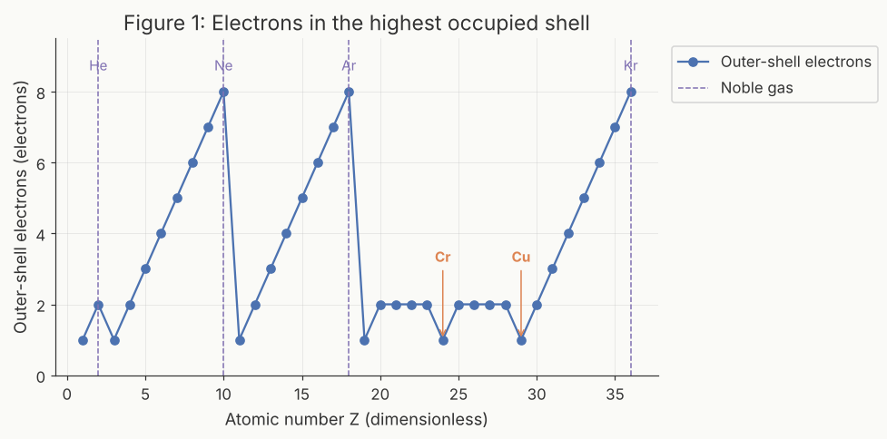
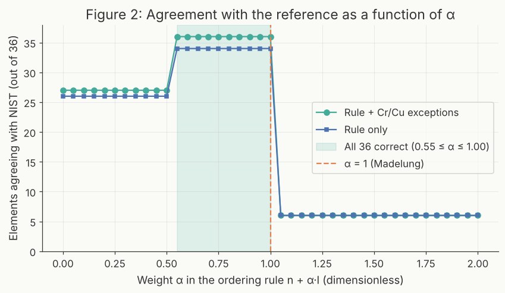
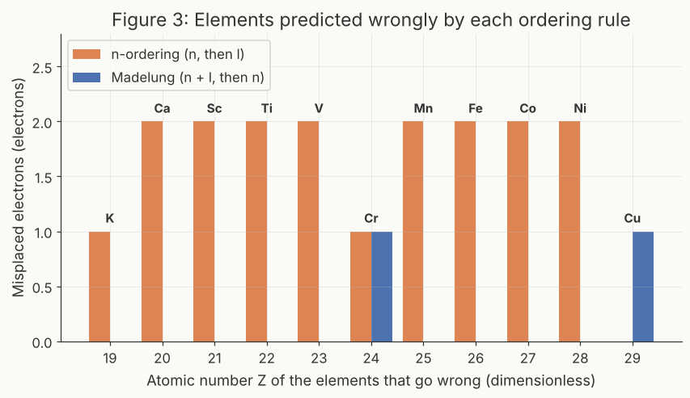
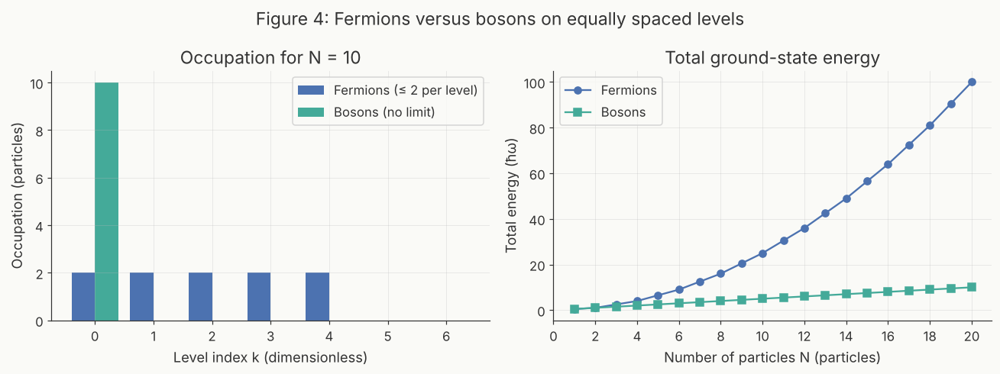

1 Explanation video
2 The Pauli exclusion principle
Section 0 — Setup and plotting style
Physics background: The Pauli exclusion principle says that no two electrons in an atom can have the same four quantum numbers. So each orbital holds at most two electrons (spin up and spin down), and a subshell holds at most 2(2l + 1) electrons: 2 for s, 6 for p, 10 for d and 14 for f. This forces electrons to fill higher subshells, which creates the repeating pattern of the periodic table.
No two electrons in an atom can share all four quantum numbers
One orbital: n = 1, l = 0, ml = 0
One orbital holds at most two electrons, with opposite spins.
Each orbital holds 2 electrons, and a subshell has 2l + 1 orbitals.
Section 1 — Physical parameters
Physics background: This section explains the basic things we use to study atoms and their electrons. We looked at 36 elements, from hydrogen (H) to krypton (Kr). Electrons are arranged in four types of subshells, and each type has a limit on how many electrons it can hold:
- s: 2 electrons
- p: 6 electrons
- d: 10 electrons
- f: 14 electrons
We also learned the symbols of the elements, found the noble gases, and noticed two elements that don't follow the normal pattern: chromium (Cr) and copper (Cu).
Notebook code · Cell 2 — Imports and plotting style
# Cell 2 — Imports and plotting style
# We only use NumPy (numbers/arrays), pandas (tables) and Matplotlib (plots).
import numpy as np
import pandas as pd
import matplotlib.pyplot as plt
# One colour palette used by every figure, so all plots look consistent.
COLORS = {
"background": "#FAFAF7", # off-white page colour
"text": "#333333", # dark grey for text and axes
"blue": "#4C72B0",
"teal": "#44AA99",
"orange": "#DD8452",
"purple": "#8172B3",
"grid": "#BBBBBB", # light grey for gridlines
}
# Font sizes (in points) for the different parts of a figure.
FONT = {"title": 15, "label": 12, "tick": 11, "legend": 11}
# Colours used when styling the pandas table in Section 4.
TABLE_HEADER_COLOR = "#E8EEF4" # light blue-grey header
TABLE_EXCEPTION_COLOR = "#FCEBD9" # soft orange for exception rows
# Apply all settings once; every later figure inherits them automatically.
plt.rcParams.update({
"figure.facecolor": COLORS["background"],
"axes.facecolor": COLORS["background"],
"savefig.facecolor": COLORS["background"],
"text.color": COLORS["text"],
"axes.labelcolor": COLORS["text"],
"axes.edgecolor": COLORS["text"],
"xtick.color": COLORS["text"],
"ytick.color": COLORS["text"],
"axes.titlesize": FONT["title"],
"axes.labelsize": FONT["label"],
"xtick.labelsize": FONT["tick"],
"ytick.labelsize": FONT["tick"],
"legend.fontsize": FONT["legend"],
"axes.grid": True, # show gridlines
"grid.color": COLORS["grid"],
"grid.linewidth": 0.6, # thin lines
"grid.alpha": 0.3, # very light
"axes.spines.top": False, # remove the top border
"axes.spines.right": False, # remove the right border
"figure.figsize": (9, 4.5), # default figure size in inches
"figure.dpi": 110, # resolution on screen
})
print("Style loaded.")Style loaded.
Notebook code · Cell 4 — Parameters of the model
# Cell 4 — Parameters of the model
Z_MAX = 36 # we study the neutral atoms Z = 1 ... 36 (H to Kr)
N_MAX = 7 # largest principal quantum number n we allow
L_MAX = 3 # largest orbital quantum number l we allow (l = 3 is "f")
# Spectroscopic letter for each value of l.
SUBSHELL_LETTERS = {0: "s", 1: "p", 2: "d", 3: "f"}
def subshell_capacity(l):
"""Maximum number of electrons in a subshell with orbital number l.
There are (2l + 1) values of m_l, and the Pauli principle allows two
electrons (spin up and spin down) in each, so the capacity is 2(2l + 1).
"""
return 2 * (2 * l + 1)
# Capacity for every l we use: {0: 2, 1: 6, 2: 10, 3: 14}
CAPACITY = {l: subshell_capacity(l) for l in SUBSHELL_LETTERS}
# Chemical symbols; SYMBOLS[Z - 1] is the element with atomic number Z.
SYMBOLS = ["H", "He", "Li", "Be", "B", "C", "N", "O", "F", "Ne",
"Na", "Mg", "Al", "Si", "P", "S", "Cl", "Ar",
"K", "Ca", "Sc", "Ti", "V", "Cr", "Mn", "Fe", "Co", "Ni",
"Cu", "Zn", "Ga", "Ge", "As", "Se", "Br", "Kr"]
# Z_MAX can be anything from 1 up to the number of symbols we have (36).
assert 1 <= Z_MAX <= len(SYMBOLS), f"Z_MAX must be between 1 and {len(SYMBOLS)}"
# Noble gases up to Kr, used for the shorthand notation "[Ar] ...".
NOBLE_GASES = {2: "He", 10: "Ne", 18: "Ar", 36: "Kr"}
# Known exceptions for Z <= 36. Each entry OVERWRITES the Aufbau result
# for the listed (n, l) subshells. (3, 2) = 3d and (4, 0) = 4s.
EXCEPTIONS = {
24: {(3, 2): 5, (4, 0): 1}, # Cr: [Ar] 3d5 4s1
29: {(3, 2): 10, (4, 0): 1}, # Cu: [Ar] 3d10 4s1
}Notebook code · Cell 5 — Test: capacities and symbols
# Cell 5 — Test: capacities and symbols
for l, letter in SUBSHELL_LETTERS.items():
print(f"l = {l} ({letter}): capacity = {CAPACITY[l]}")
print()
print("Symbols available:", len(SYMBOLS), f"({SYMBOLS[0]} to {SYMBOLS[-1]})")
print("Elements studied :", Z_MAX, f"({SYMBOLS[0]} to {SYMBOLS[Z_MAX - 1]})")
assert len(SYMBOLS) >= Z_MAX # there must be a symbol for every Z we study
assert CAPACITY == {0: 2, 1: 6, 2: 10, 3: 14}l = 0 (s): capacity = 2 l = 1 (p): capacity = 6 l = 2 (d): capacity = 10 l = 3 (f): capacity = 14 Symbols available: 36 (H to Kr) Elements studied : 36 (H to Kr)
3 The Madelung (n + l) filling order
Section 2 — The Madelung (n + l) filling order
Physics background: The Madelung rule shows the order in which electrons fill subshells using (n + l). The subshell with the lower (n + l) value fills first. If two subshells have the same value, the one with the lower n fills first. This rule helps us predict electron configurations.
4 < 5, so 4s fills before 3d
Tie: 3p and 4s both have n + l = 4 → 3p (lower n) comes first.
Full Madelung order used in the model (n ≤ 7, l ≤ 3), with n + l above each subshell
Notebook code · Cell 7 — Madelung order
# Cell 7 — Madelung order
def subshell_label(n, l):
"""Return the usual name of a subshell, e.g. (3, 2) -> "3d"."""
return f"{n}{SUBSHELL_LETTERS[l]}"
def madelung_key(subshell):
"""Sorting key for the Madelung rule.
Python sorts tuples element by element: first by n + l,
and if two subshells have the same n + l, by n (lower n first).
"""
n, l = subshell
return (n + l, n)
def madelung_order(n_max, l_max):
"""List of all allowed (n, l) pairs, sorted by the Madelung rule."""
subshells = []
for n in range(1, n_max + 1):
# l can only go from 0 to n - 1 (and we stop at l_max).
for l in range(0, min(n - 1, l_max) + 1):
subshells.append((n, l))
return sorted(subshells, key=madelung_key)
# Computed once and reused everywhere below.
MADELUNG_ORDER = madelung_order(N_MAX, L_MAX)Notebook code · Cell 8 — Test: print the order and a small table of n, l, n + l
# Cell 8 — Test: print the order and a small table of n, l, n + l
first_12 = [subshell_label(n, l) for (n, l) in MADELUNG_ORDER[:12]]
print(" ".join(first_12))
assert " ".join(first_12) == "1s 2s 2p 3s 3p 4s 3d 4p 5s 4d 5p 6s"
order_table = pd.DataFrame({
"Subshell": [subshell_label(n, l) for (n, l) in MADELUNG_ORDER],
"n": [n for (n, l) in MADELUNG_ORDER],
"l": [l for (n, l) in MADELUNG_ORDER],
"n + l": [n + l for (n, l) in MADELUNG_ORDER],
})
print()
print(order_table.to_string(index=False))1s 2s 2p 3s 3p 4s 3d 4p 5s 4d 5p 6s
Subshell n l n + l
1s 1 0 1
2s 2 0 2
2p 2 1 3
3s 3 0 3
3p 3 1 4
4s 4 0 4
3d 3 2 5
4p 4 1 5
5s 5 0 5
4d 4 2 6
5p 5 1 6
6s 6 0 6
4f 4 3 7
5d 5 2 7
6p 6 1 7
7s 7 0 7
5f 5 3 8
6d 6 2 8
7p 7 1 8
6f 6 3 9
7d 7 2 9
7f 7 3 104 Interactive atom builder: H to Kr
Section 3 — Filling the subshells (Aufbau)
Physics background: In this part we studied how electrons are distributed in the subshells according to the Aufbau principle. Electrons fill the lower energy levels first and each subshell has a specific number of electrons. We also noticed some exceptions such as chromium and copper, because their electrons rearrange to reach a more stable state.
Shell diagram
Orbital boxes on an energy axis
- Full configuration
- Noble-gas shorthand
- NIST SRD 111
- Comparison
What changed from Z − 1
Notebook code · Cell 10 — Filling functions
# Cell 10 — Filling functions
def fill_aufbau(Z, order=MADELUNG_ORDER):
"""Put Z electrons into the subshells in the given order.
Each subshell takes as many electrons as it can (its capacity),
until no electrons are left. Returns {(n, l): electrons}.
"""
config = {}
remaining = Z # electrons still to place
for (n, l) in order:
if remaining == 0:
break # all electrons placed
electrons = min(remaining, CAPACITY[l]) # fill as much as allowed
config[(n, l)] = electrons
remaining -= electrons
return config
def electron_configuration(Z, order=MADELUNG_ORDER, apply_exceptions=True):
"""Ground-state configuration of the neutral atom Z.
Returns the pair (configuration, is_exception), where is_exception
is True when an entry of EXCEPTIONS was applied.
"""
config = fill_aufbau(Z, order)
is_exception = False
if apply_exceptions and Z in EXCEPTIONS:
config.update(EXCEPTIONS[Z]) # overwrite those subshells
is_exception = True
# Remove any subshell that ended up empty (0 electrons).
config = {sub: e for sub, e in config.items() if e > 0}
return config, is_exceptionNotebook code · Cell 11 — Test: a few elements
# Cell 11 — Test: a few elements
for Z in [11, 24, 26, 29, 36]: # Na, Cr, Fe, Cu, Kr
config, is_exc = electron_configuration(Z)
print(f"{SYMBOLS[Z - 1]:>2} (Z = {Z}): {config} exception = {is_exc}")
print()
config_cr_pure, _ = electron_configuration(24, apply_exceptions=False)
print("Cr with pure Aufbau:", config_cr_pure)Na (Z = 11): {(1, 0): 2, (2, 0): 2, (2, 1): 6, (3, 0): 1} exception = False
Cr (Z = 24): {(1, 0): 2, (2, 0): 2, (2, 1): 6, (3, 0): 2, (3, 1): 6, (4, 0): 1, (3, 2): 5} exception = True
Fe (Z = 26): {(1, 0): 2, (2, 0): 2, (2, 1): 6, (3, 0): 2, (3, 1): 6, (4, 0): 2, (3, 2): 6} exception = False
Cu (Z = 29): {(1, 0): 2, (2, 0): 2, (2, 1): 6, (3, 0): 2, (3, 1): 6, (4, 0): 1, (3, 2): 10} exception = True
Kr (Z = 36): {(1, 0): 2, (2, 0): 2, (2, 1): 6, (3, 0): 2, (3, 1): 6, (4, 0): 2, (3, 2): 10, (4, 1): 6} exception = False
Cr with pure Aufbau: {(1, 0): 2, (2, 0): 2, (2, 1): 6, (3, 0): 2, (3, 1): 6, (4, 0): 2, (3, 2): 4}5 Configuration table, Z = 1 to 36
Section 4 — Writing the configurations and the summary table
4.1 Text formatting
Physics background: In this part, the code shows electron configurations from hydrogen (Z = 1) to krypton (Z = 36). We used two ways, the full way and the short way using noble gases, to show the outer electrons clearly.
Notebook code · Cell 13 — Formatting functions
# Cell 13 — Formatting functions
def format_full(config, sort_by_n=True):
"""Turn {(n, l): electrons} into text like "1s2 2s2 2p6".
sort_by_n=True writes the subshells sorted by n, then l (usual notation);
sort_by_n=False keeps the order in which they were filled.
"""
subshells = sorted(config) if sort_by_n else list(config)
parts = [f"{subshell_label(n, l)}{config[(n, l)]}" for (n, l) in subshells]
return " ".join(parts)
def noble_gas_core(Z):
"""Atomic number of the largest noble gas with Z_core < Z (0 if none)."""
core = 0
for Z_gas in NOBLE_GASES:
if Z_gas < Z:
core = Z_gas
return core
def format_shorthand(Z, apply_exceptions=True, sort_by_n=True):
"""Configuration in noble-gas shorthand, e.g. "[Ar] 3d5 4s1"."""
config, _ = electron_configuration(Z, apply_exceptions=apply_exceptions)
Z_core = noble_gas_core(Z)
if Z_core == 0: # H and He have no noble-gas core
return format_full(config, sort_by_n)
core_config, _ = electron_configuration(Z_core)
# Keep only the electrons that are NOT part of the core.
outer = {}
for sub, e in config.items():
extra = e - core_config.get(sub, 0)
if extra > 0:
outer[sub] = extra
return f"[{NOBLE_GASES[Z_core]}] " + format_full(outer, sort_by_n)Notebook code · Cell 14 — Test: full and shorthand notation
# Cell 14 — Test: full and shorthand notation
for Z in [11, 24, 26, 29, 36]: # Na, Cr, Fe, Cu, Kr
config, _ = electron_configuration(Z)
print(f"{SYMBOLS[Z - 1]:>2}: {format_full(config):<40} {format_shorthand(Z)}")Na: 1s2 2s2 2p6 3s1 [Ne] 3s1 Cr: 1s2 2s2 2p6 3s2 3p6 3d5 4s1 [Ar] 3d5 4s1 Fe: 1s2 2s2 2p6 3s2 3p6 3d6 4s2 [Ar] 3d6 4s2 Cu: 1s2 2s2 2p6 3s2 3p6 3d10 4s1 [Ar] 3d10 4s1 Kr: 1s2 2s2 2p6 3s2 3p6 3d10 4s2 4p6 [Ar] 3d10 4s2 4p6
4.2 Configuration table for Z = 1 to 36
Physics background: In this part, we put the results in a table and used orange for the elements that break the Aufbau rule. The result shows 34 elements follow the rule and only two elements break it, chromium (Cr) and copper (Cu). This happens because atoms are more stable when the 3d shell is half full or completely full.
| Z | Element | Full configuration | Shorthand | Exception | Pure Aufbau would give |
|---|
Click an element symbol to open it in the atom builder.
Notebook code · Cell 16 — Build and style the configuration table
# Cell 16 — Build and style the configuration table
rows = []
for Z in range(1, Z_MAX + 1):
config, is_exc = electron_configuration(Z)
rows.append({
"Z": Z,
"Element": SYMBOLS[Z - 1],
"Full configuration": format_full(config),
"Shorthand": format_shorthand(Z),
"Exception": "YES" if is_exc else "",
# Only filled for the exceptions: what the plain rule would predict.
"Pure Aufbau would give": format_shorthand(Z, apply_exceptions=False) if is_exc else "",
})
config_table = pd.DataFrame(rows)
def highlight_exceptions(row):
"""Soft-orange, bold style for exception rows; no style otherwise."""
if row["Exception"] == "YES":
style = f"background-color: {TABLE_EXCEPTION_COLOR}; font-weight: bold"
else:
style = ""
return [style] * len(row)
styled_table = (
config_table.style
.apply(highlight_exceptions, axis=1) # colour row by row
.set_table_styles([{"selector": "th", # header cells
"props": [("background-color", TABLE_HEADER_COLOR),
("color", COLORS["text"])]}])
.hide(axis="index") # Z column is enough
)Notebook code · Cell 17 — Test: size of the table, the exception rows, then the full table
# Cell 17 — Test: size of the table, the exception rows, then the full table
print("Table shape:", config_table.shape, "(rows, columns)")
print()
print(config_table[config_table["Exception"] == "YES"].to_string(index=False))
styled_table # the last line of a cell is displayed by JupyterTable shape: (36, 6) (rows, columns) Z Element Full configuration Shorthand Exception Pure Aufbau would give 24 Cr 1s2 2s2 2p6 3s2 3p6 3d5 4s1 [Ar] 3d5 4s1 YES [Ar] 3d4 4s2 29 Cu 1s2 2s2 2p6 3s2 3p6 3d10 4s1 [Ar] 3d10 4s1 YES [Ar] 3d9 4s2
6 Periodicity: outer-shell electrons
Section 6 — Parameter study
Physics background: Here we looked at how the atomic number (Z) is connected to the number of electrons in the outer shell. The number rises from 1 to 8 across periods 2 and 3, then drops to 1 after each noble gas. In period 4 it stays at 2 from Ca to Zn, because the 3d electrons belong to the inner shell (n = 3). It dips to 1 at Cr and Cu, where one 4s electron moves into 3d. This repeating pattern is what makes the periodic table organized.
6.1 Outer-shell electrons
Figure 1: Electrons in the highest occupied shell
Hover or use ← → on the focused chart; click or press Enter to open that element in the atom builder.
Figure 1 caption: The bottom line of the graph shows the atomic number (Z), and the side line shows the number of outer-shell electrons. The purple dashed lines mark the noble gases (He, Ne, Ar and Kr). Cr and Cu are special cases because each one has only one electron in its outer shell.
Notebook figure (Figure 1, Matplotlib)

Notebook code · Cell 22 — Figure 1: outer-shell electrons against Z
# Cell 22 — Figure 1: outer-shell electrons against Z
def outer_shell_electrons(config):
"""Electrons in the highest occupied shell n."""
n_highest = max(n for (n, l) in config)
return sum(e for (n, l), e in config.items() if n == n_highest)
Z_values = np.arange(1, Z_MAX + 1)
outer = np.array([outer_shell_electrons(electron_configuration(Z)[0]) for Z in Z_values])
fig, ax = plt.subplots()
ax.plot(Z_values, outer, marker="o", color=COLORS["blue"], label="Outer-shell electrons")
# Dashed vertical lines at the noble gases.
first_line = True
for Z_gas, gas in NOBLE_GASES.items():
if Z_gas > Z_MAX:
continue # this gas is outside the studied range
ax.axvline(Z_gas, linestyle="--", color=COLORS["purple"], linewidth=1,
label="Noble gas" if first_line else None) # only one legend entry
first_line = False
ax.text(Z_gas, outer.max() + 0.6, gas, ha="center", color=COLORS["purple"])
# Labels on the two exceptions (only if they are inside the studied range).
for Z_exc in EXCEPTIONS:
if Z_exc > Z_MAX:
continue
ax.annotate(SYMBOLS[Z_exc - 1], xy=(Z_exc, outer[Z_exc - 1]),
xytext=(Z_exc, outer[Z_exc - 1] + 2.2), ha="center",
color=COLORS["orange"], fontweight="bold",
arrowprops={"arrowstyle": "->", "color": COLORS["orange"]})
ax.set_xlabel("Atomic number Z (dimensionless)")
ax.set_ylabel("Outer-shell electrons (electrons)")
ax.set_title("Figure 1: Electrons in the highest occupied shell")
ax.set_ylim(0, outer.max() + 1.5)
ax.legend(loc="upper left", bbox_to_anchor=(1.01, 1)) # legend outside, right
fig.tight_layout()
plt.show()7 Validation against NIST SRD 111
Section 5 — Validation against NIST SRD 111
Physics background: In this part, we check the accuracy of the electron configuration model by comparing the results to NIST data for 36 elements. The Madelung rule alone gave 34 correct answers out of 36, an accuracy of 94.4%. The two incorrect elements were chromium (Cr) and copper (Cu). After adding these two elements as exceptions, all 36 results became correct (100%). The 100% is reached only because Cr and Cu were added by hand; the rule alone gives 34/36.
The reference data below are in NIST notation: an exponent of 1 is not written (e.g. 4s means 4s1).
Rule: pure Madelung (no exceptions)
Rule: Madelung + exceptions (Cr, Cu)
Printed check results from the notebook
Pure Madelung : 34/36 match (94.4 %) wrong: ['Cr', 'Cu'] Madelung + exceptions : 36/36 match (100.0 %) wrong: [] Check passed: electron total = Z for every element. Check passed: no subshell exceeds 2(2l + 1).
The same checks, recomputed live in your browser
Notebook code · Cell 19 — Reference data (NIST SRD 111, ground-state configurations)
# Cell 19 — Reference data (NIST SRD 111, ground-state configurations)
# Source: NIST Standard Reference Database 111,
# "Ground Levels and Ionization Energies for the Neutral Atoms".
NIST_SRD111 = {
1: "1s", 2: "1s2",
3: "[He] 2s", 4: "[He] 2s2",
5: "[He] 2s2 2p", 6: "[He] 2s2 2p2",
7: "[He] 2s2 2p3", 8: "[He] 2s2 2p4",
9: "[He] 2s2 2p5", 10: "[He] 2s2 2p6",
11: "[Ne] 3s", 12: "[Ne] 3s2",
13: "[Ne] 3s2 3p", 14: "[Ne] 3s2 3p2",
15: "[Ne] 3s2 3p3", 16: "[Ne] 3s2 3p4",
17: "[Ne] 3s2 3p5", 18: "[Ne] 3s2 3p6",
19: "[Ar] 4s", 20: "[Ar] 4s2",
21: "[Ar] 3d 4s2", 22: "[Ar] 3d2 4s2",
23: "[Ar] 3d3 4s2", 24: "[Ar] 3d5 4s",
25: "[Ar] 3d5 4s2", 26: "[Ar] 3d6 4s2",
27: "[Ar] 3d7 4s2", 28: "[Ar] 3d8 4s2",
29: "[Ar] 3d10 4s", 30: "[Ar] 3d10 4s2",
31: "[Ar] 3d10 4s2 4p", 32: "[Ar] 3d10 4s2 4p2",
33: "[Ar] 3d10 4s2 4p3", 34: "[Ar] 3d10 4s2 4p4",
35: "[Ar] 3d10 4s2 4p5", 36: "[Ar] 3d10 4s2 4p6",
}
# Change to "YES" only after the group has checked every entry against NIST.
REFERENCE_CHECKED_BY_GROUP = "NO"
# Reverse look-ups: letter -> l, and gas symbol -> Z.
LETTER_TO_L = {letter: l for l, letter in SUBSHELL_LETTERS.items()}
GAS_TO_Z = {symbol: Z for Z, symbol in NOBLE_GASES.items()}
def expand_reference(text):
"""Turn NIST text like "[Ar] 3d5 4s" into {(n, l): electrons}."""
config = {}
text = text.replace("]", "] ") # also accept "[Ar]3d5"
for token in text.split():
if token.startswith("["):
# Noble-gas core: replace "[Ar]" by Ar's own reference configuration.
gas = token.strip("[]")
config.update(expand_reference(NIST_SRD111[GAS_TO_Z[gas]]))
else:
n = int(token[0]) # e.g. "3d10" -> n = 3
l = LETTER_TO_L[token[1]] # -> l = 2
exponent = token[2:] # -> "10"
config[(n, l)] = int(exponent) if exponent else 1 # no exponent = 1
return config
print("Reference checked by group:", REFERENCE_CHECKED_BY_GROUP)
print("Example: expand_reference('[Ar] 3d5 4s') =", expand_reference("[Ar] 3d5 4s"))Reference checked by group: NO
Example: expand_reference('[Ar] 3d5 4s') = {(1, 0): 2, (2, 0): 2, (2, 1): 6, (3, 0): 2, (3, 1): 6, (3, 2): 5, (4, 0): 1}Notebook code · Cell 20 — Compare the model with the reference
# Cell 20 — Compare the model with the reference
def count_matches(order=MADELUNG_ORDER, apply_exceptions=True):
"""Return the list of Z values where the model equals the reference."""
matches = []
for Z in range(1, Z_MAX + 1):
model, _ = electron_configuration(Z, order, apply_exceptions)
if model == expand_reference(NIST_SRD111[Z]): # dicts: same keys and values
matches.append(Z)
return matches
for label, use_exc in [("Pure Madelung", False), ("Madelung + exceptions", True)]:
matches = count_matches(apply_exceptions=use_exc)
wrong = [SYMBOLS[Z - 1] for Z in range(1, Z_MAX + 1) if Z not in matches]
percent = 100 * len(matches) / Z_MAX
print(f"{label:<22}: {len(matches)}/{Z_MAX} match ({percent:.1f} %) wrong: {wrong}")
# Physical consistency checks on the final configurations.
for Z in range(1, Z_MAX + 1):
config, _ = electron_configuration(Z)
assert sum(config.values()) == Z, f"Z = {Z}: electron total is not Z"
for (n, l), e in config.items():
assert e <= CAPACITY[l], f"Z = {Z}: {subshell_label(n, l)} exceeds its capacity"
print()
print("Check passed: electron total = Z for every element.")
print("Check passed: no subshell exceeds 2(2l + 1).")Pure Madelung : 34/36 match (94.4 %) wrong: ['Cr', 'Cu'] Madelung + exceptions : 36/36 match (100.0 %) wrong: [] Check passed: electron total = Z for every element. Check passed: no subshell exceeds 2(2l + 1).
8 Parameter study: order by n + α·l
6.2 Changing the ordering rule: n + α·l
Filling order for this α (first 12 subshells, value of n + α·l above each; red outline = different from Madelung)
Figure 2: Agreement with the reference as a function of α
Click the chart (or press Enter on it) to set α. ← → move along α.
Figure 2 caption: This figure shows how changing α affects the number of correct electron configurations out of 36 elements. When α ≤ 0.50, only 26–27 elements are correct, because 3d fills before 4s. When 0.55 ≤ α ≤ 1.00 (shaded area), the rule gives 34/36 correct results, and 36/36 after adding the Cr and Cu exceptions. When α > 1, 3s fills before 2p, so configurations go wrong from boron (Z = 5) onward and only about 6 elements are correct. The dashed line at α = 1 represents the Madelung rule.
Notebook figure (Figure 2, Matplotlib)

Notebook code · Cell 25 — Figure 2: sweep the ordering rule n + alpha * l
# Cell 25 — Figure 2: sweep the ordering rule n + alpha * l
def general_order(alpha, n_max=N_MAX, l_max=L_MAX):
"""Subshells sorted by (n + alpha*l), ties broken by lower n.
alpha = 1 gives back the Madelung rule. round() removes tiny
floating-point errors so that exact ties are recognised as ties.
"""
subshells = [(n, l) for n in range(1, n_max + 1)
for l in range(0, min(n - 1, l_max) + 1)]
return sorted(subshells, key=lambda s: (round(s[0] + alpha * s[1], 10), s[0]))
# Sanity check: alpha = 1 must reproduce the Madelung order.
assert general_order(1.0) == MADELUNG_ORDER
alphas = np.round(np.arange(0, 2.0001, 0.05), 2) # 0.00, 0.05, ..., 2.00
correct_pure = [] # matches using only the ordering rule
correct_exc = [] # matches using the rule + the Cr/Cu exceptions
for alpha in alphas:
order = general_order(alpha)
correct_pure.append(len(count_matches(order, apply_exceptions=False)))
correct_exc.append(len(count_matches(order, apply_exceptions=True)))
correct_pure = np.array(correct_pure)
correct_exc = np.array(correct_exc)
fig, ax = plt.subplots()
ax.plot(alphas, correct_exc, marker="o", color=COLORS["teal"], label="Rule + Cr/Cu exceptions")
ax.plot(alphas, correct_pure, marker="s", markersize=4, color=COLORS["blue"], label="Rule only")
# Shade the alpha range where all Z_MAX elements are correct.
all_ok = alphas[correct_exc == Z_MAX]
if len(all_ok) > 0:
ax.axvspan(all_ok.min(), all_ok.max(), color=COLORS["teal"], alpha=0.15,
label=f"All {Z_MAX} correct ({all_ok.min():.2f} ≤ α ≤ {all_ok.max():.2f})")
ax.axvline(1.0, linestyle="--", color=COLORS["orange"], label="α = 1 (Madelung)")
ax.set_xlabel("Weight α in the ordering rule n + α·l (dimensionless)")
ax.set_ylabel(f"Elements agreeing with NIST (out of {Z_MAX})")
ax.set_title("Figure 2: Agreement with the reference as a function of α")
ax.set_ylim(0, Z_MAX + 2)
ax.legend(loc="center right")
plt.show()
print(f"alpha values where all {Z_MAX} are correct:", [float(a) for a in all_ok])alpha values where all 36 are correct: [0.55, 0.6, 0.65, 0.7, 0.75, 0.8, 0.85, 0.9, 0.95, 1.0]
6.3 Simple n-ordering compared with Madelung
Physics background: Since there is only one electron in a hydrogen atom, its energy depends only on n, so we might expect the subshells to fill in the order of n. In atoms with several electrons, the inner electrons shield part of the nucleus's attraction from the outer electrons. An electron in an s subshell can get closer to the nucleus than an electron in a d subshell, so it is less shielded and has lower energy. This is why 4s fills before 3d. The correct order is given by the Madelung rule, where each subshell is labelled by n + l, and the lower value of n + l fills first. Both rules were tested on elements 1–36 and compared with NIST.
α = 0: order by n only
Figure 3: Elements predicted wrongly by each ordering rule
Hover a pair of bars (or focus the chart and use ← →) for details.
Figure 3 caption: The bars show how many electrons are in the wrong place for each element.
- Orange: filling by n only
- Blue: Madelung rule
Elements not shown in the chart are correct under both rules. Filling by n alone fails for 10 elements (K to Ni), because it puts 3d before 4s. Madelung fails only for Cr and Cu (1 electron each), the known exceptions.
Notebook figure (Figure 3, Matplotlib)

Notebook code · Cell 28 — Figure 3: n-ordering (n first, then l) versus Madelung
# Cell 28 — Figure 3: n-ordering (n first, then l) versus Madelung
# Sorting the (n, l) tuples directly gives 1s 2s 2p 3s 3p 3d 4s 4p ...
N_ORDER = sorted(MADELUNG_ORDER)
def misplaced_electrons(model, reference):
"""Number of electrons sitting in the wrong subshell.
Each misplaced electron is counted twice (missing in one subshell,
extra in another), so we divide the total difference by 2.
"""
all_subshells = set(model) | set(reference)
diff = sum(abs(model.get(s, 0) - reference.get(s, 0)) for s in all_subshells)
return diff // 2
wrong_n = {} # Z -> misplaced electrons for the n-ordering
wrong_madelung = {} # Z -> misplaced electrons for pure Madelung
for Z in range(1, Z_MAX + 1):
ref = expand_reference(NIST_SRD111[Z])
m_n = misplaced_electrons(electron_configuration(Z, N_ORDER, False)[0], ref)
m_mad = misplaced_electrons(electron_configuration(Z, MADELUNG_ORDER, False)[0], ref)
if m_n > 0:
wrong_n[Z] = m_n
if m_mad > 0:
wrong_madelung[Z] = m_mad
print("Wrong with n-ordering :", [SYMBOLS[Z - 1] for Z in wrong_n], f"({len(wrong_n)} elements)")
print("Wrong with Madelung :", [SYMBOLS[Z - 1] for Z in wrong_madelung], f"({len(wrong_madelung)} elements)")
# Bar chart: two bars per element, side by side.
Z_wrong = sorted(set(wrong_n) | set(wrong_madelung))
x = np.arange(len(Z_wrong))
h_n = np.array([wrong_n.get(Z, 0) for Z in Z_wrong])
h_mad = np.array([wrong_madelung.get(Z, 0) for Z in Z_wrong])
width = 0.4
fig, ax = plt.subplots()
if len(Z_wrong) == 0:
# For small Z_MAX both rules are correct, so there are no bars to draw.
ax.text(0.5, 0.5, f"No element is predicted wrongly for Z ≤ {Z_MAX}",
ha="center", va="center", transform=ax.transAxes)
else:
ax.bar(x - width / 2, h_n, width, color=COLORS["orange"], label="n-ordering (n, then l)")
ax.bar(x + width / 2, h_mad, width, color=COLORS["blue"], label="Madelung (n + l, then n)")
# Element symbol above each pair of bars.
for xi, Z, top in zip(x, Z_wrong, np.maximum(h_n, h_mad)):
ax.text(xi, top + 0.08, SYMBOLS[Z - 1], ha="center", fontweight="bold")
ax.set_xticks(x)
ax.set_xticklabels([str(Z) for Z in Z_wrong])
ax.set_ylim(0, max(h_n.max(), h_mad.max()) + 0.8)
ax.legend(loc="upper left")
ax.set_xlabel("Atomic number Z of the elements that go wrong (dimensionless)")
ax.set_ylabel("Misplaced electrons (electrons)")
ax.set_title("Figure 3: Elements predicted wrongly by each ordering rule")
plt.show()Wrong with n-ordering : ['K', 'Ca', 'Sc', 'Ti', 'V', 'Cr', 'Mn', 'Fe', 'Co', 'Ni'] (10 elements) Wrong with Madelung : ['Cr', 'Cu'] (2 elements)
9 Limits of the model
8.2 Limitations of the model
Our model gives the correct configuration for all 36 elements, but that result needs some context. Below are the main places where the model is simplified, and what this means for our results.
1. It sorts subshells instead of calculating energies
The model never works out how much energy a subshell actually has. It simply puts the subshells in order using n + l, and it ignores how the electrons interact with each other, through their repulsion and exchange energy. Those interactions are what make a half-filled or completely filled 3d subshell more stable, so without them the model has no way of knowing that Cr and Cu are special. We had to type their correct configurations into the code ourselves. In other words, the model gets these two elements right only because we gave it the answer.
2. It would not work for heavier elements
Within the range of the assignment, up to krypton, the model works well. However, it cannot be extended just by increasing Z. Beyond krypton the Madelung rule fails much more often, in elements such as niobium, molybdenum, ruthenium, rhodium, palladium and silver. Our list of exceptions only contains Cr and Cu, so the code would simply give the wrong answer for all of these. In heavy atoms the subshell energies are very close together, so small effects that the rule ignores, such as relativity, are enough to change the filling order. Keeping the model correct would mean adding more and more exceptions by hand.
3. It only describes neutral atoms in their ground state
The code always places exactly Z electrons, so every atom it builds is neutral and in its lowest energy state. There is no way to give it a charge, which means it cannot describe ions. This is a real gap, because the filling order changes once an atom is ionised: the 3d subshell drops below 4s, and the 4s electrons are the first to leave. Iron, for example, becomes Fe²⁺ = [Ar] 3d⁶, not [Ar] 3d⁴ 4s². The model also cannot handle excited states, where an electron has moved up to a higher subshell.
4. The fermion–boson comparison is an idealised picture
In our extension, each level has the energy (k + ½)ħω, so the levels are evenly spaced like those of a harmonic oscillator. Real atomic levels are not evenly spaced, and they have shapes and angular momentum that our simple levels do not. This part of the model is useful for showing the basic difference between fermions and bosons, but it does not describe the electrons in a real atom.
For Z > 36 the simple rule has more exceptions.
Orbital energies shift with Z and electron–electron repulsion matters, so the Madelung rule is empirical.
NIST values checked against NIST SRD 111 (Atomic Spectra Database ionization-energy table): Pd [Kr] 4d10, Ag [Kr] 4d10 5s.
10 Extension: fermions versus bosons
Section 7 — Extension: fermions versus bosons
Equally spaced levels Ek = (k + ½) ħω, with k = 0, 1, 2, … Spin-½ fermions: at most 2 particles per level. Bosons: no limit.
Physics background: Particles fill energy levels starting from the lowest. Due to the Pauli principle, each level can hold at most two fermions while bosons have no limit.
Fermions (spin ½)
Bosons (integer spin)
Levels Ek = (k + ½)ħω. Fermions: at most 2 per level (↑↓). Bosons: no limit, so all sit in k = 0.
Figure 4: Total ground-state energy against N
Click the chart (or press Enter on it) to set N. ← → move along N.
Figure 4 caption: Left: for N = 10 all bosons occupy the lowest level (k = 0) while fermions fill levels 0 to 4. Right: total ground-state energy (in units of ħω) versus N. Fermion energy increases approximately as N² while boson energy increases linearly. At N = 10 the energies are 25 ħω (fermions) and 5 ħω (bosons).
Notebook figure (Figure 4, Matplotlib)

Notebook code · Cell 31 — Filling equally spaced levels
# Cell 31 — Filling equally spaced levels
N_LEVELS = 20 # enough levels for up to 40 fermions
def level_energy(k):
"""Energy of level k in units of hbar*omega: E_k = k + 1/2."""
return k + 0.5
def fill_levels(N, max_per_level):
"""Put N particles into the lowest levels, at most max_per_level each.
Returns an array: occupation[k] = number of particles in level k.
"""
occupation = np.zeros(N_LEVELS, dtype=int)
remaining = N
for k in range(N_LEVELS):
if remaining == 0:
break
occupation[k] = min(remaining, max_per_level)
remaining -= occupation[k]
return occupation
def total_energy(occupation):
"""Total energy (in hbar*omega) = sum over levels of n_k * E_k."""
k = np.arange(len(occupation))
return np.sum(occupation * level_energy(k))
FERMION_MAX = 2 # spin 1/2: spin up + spin down
def boson_max(N):
return N # no limit: all N can share a level
N_EXAMPLE = 10
occ_fermions = fill_levels(N_EXAMPLE, FERMION_MAX)
occ_bosons = fill_levels(N_EXAMPLE, boson_max(N_EXAMPLE))
E_fermions = total_energy(occ_fermions)
E_bosons = total_energy(occ_bosons)
print(f"N = {N_EXAMPLE}: fermions E = {E_fermions} hbar*omega, bosons E = {E_bosons} hbar*omega")
assert E_fermions == 25.0, "fermion energy for N = 10 should be 25 hbar*omega"
assert E_bosons == 5.0, "boson energy for N = 10 should be 5 hbar*omega"
print("Assertions passed.")N = 10: fermions E = 25.0 hbar*omega, bosons E = 5.0 hbar*omega Assertions passed.
Notebook code · Cell 32 — Figure 4: occupations for N = 10 and total energy against N
# Cell 32 — Figure 4: occupations for N = 10 and total energy against N
N_values = np.arange(1, 21)
E_f = np.array([total_energy(fill_levels(N, FERMION_MAX)) for N in N_values])
E_b = np.array([total_energy(fill_levels(N, boson_max(N))) for N in N_values])
fig, (ax1, ax2) = plt.subplots(1, 2, figsize=(12, 4.5))
# Left panel: occupation of each level for N = 10 (first 7 levels shown).
k_shown = np.arange(7)
width = 0.4
ax1.bar(k_shown - width / 2, occ_fermions[k_shown], width, color=COLORS["blue"], label="Fermions (≤ 2 per level)")
ax1.bar(k_shown + width / 2, occ_bosons[k_shown], width, color=COLORS["teal"], label="Bosons (no limit)")
ax1.set_xticks(k_shown)
ax1.set_xlabel("Level index k (dimensionless)")
ax1.set_ylabel("Occupation (particles)")
ax1.set_title(f"Occupation for N = {N_EXAMPLE}")
ax1.legend()
# Right panel: total ground-state energy against N.
ax2.plot(N_values, E_f, marker="o", color=COLORS["blue"], label="Fermions")
ax2.plot(N_values, E_b, marker="s", color=COLORS["teal"], label="Bosons")
ax2.set_xticks(np.arange(0, 21, 2)) # whole numbers only
ax2.set_xlabel("Number of particles N (particles)")
ax2.set_ylabel("Total energy (ħω)")
ax2.set_title("Total ground-state energy")
ax2.legend()
fig.suptitle("Figure 4: Fermions versus bosons on equally spaced levels", fontsize=FONT["title"])
fig.tight_layout()
plt.show()11 Interpretation, AI log and reflection
Section 8 — Interpretation, limitations, AI log and references
8.1 Interpretation of the results
1. How the periodic table comes out of two rules
Looking at all our results together, the periodic table comes from just two simple ideas. The Pauli principle decides how many electrons each subshell can hold, and the Madelung rule decides the order they fill in. When we combine them, we get period lengths of 2, 8, 8 and 18, which is exactly the repeating pattern shown in Figure 1. Our code never told the model where a period starts or ends; the pattern came out on its own. Cr and Cu are the only places where the pattern breaks, and they show that real atoms sometimes prefer a more stable arrangement over the simple filling order.
2. Why the energy depends on l and not only on n
Filling the subshells by n alone failed for ten elements, while the Madelung rule failed for only two, as Figure 3 shows. This difference tells us something important: in atoms with more than one electron, the energy of a subshell depends on its shape (l), not just on its shell number (n). This is different from hydrogen, where only n matters. So the other electrons in the atom change the order of the energy levels, and that change is what puts 4s before 3d.
3. What the α study tells us about the Madelung rule
The α study shows how strongly the energy has to depend on l for the model to work. For 4s to fill before 3d, its value of n + αl must be smaller:
Only a narrow range of α (about 0.55 to 1) gives the correct configurations, and Figure 2 shows how quickly the agreement drops outside this window. The Madelung rule (α = 1) sits right at the edge of that range. This means it is not an exact law of nature. It is an empirical rule that works very well for Z = 1 to 36 but is not derived from first principles.
4. Why the Pauli principle matters
Comparing fermions and bosons shows what the Pauli principle does to a system of particles. Fermions are forced to stack up into higher levels, so their total energy grows much faster than that of bosons, as seen in Figure 4. For atoms, this has a big consequence: if electrons were bosons, they would all fall into the 1s orbital. There would be no shells, no periods and no periodic table. So the Pauli principle is the real reason atoms have structure, and the reason the elements behave the way they do.
8.3 AI log
- Pauli principle video project:
https://claude.ai/share/244975fa-767f-4626-b39d-648dc1cc70ab - Project code with error found:
https://claude.ai/share/8ccf0904-7464-42a1-aef1-0a621c0ae9c1 - Code update with text:
https://claude.ai/share/5710205f-81db-44c9-b222-dbbc003eec01 - Claude Code website:
This session was done in Claude Code, which does not provide a shareable link. In it, we asked Claude to build a website for our project and publish it with a public link using GitHub Pages.
8.4 Reflection on using AI
1. How We Used AI
We used Claude to help us write our Python code, create the graphs and fix errors. Our job was to check every result against the NIST data and make sure we understood each part of the code.
2. An AI Mistake We Found and Fixed
The AI wrote the test assert len(SYMBOLS) == Z_MAX, which only works when exactly 36 elements are studied. We found the problem when we changed Z_MAX to a value other than 36: Cell 5 stopped with an AssertionError. For smaller values, Figure 1 also crashed with an IndexError, because it tried to label elements outside the chosen range, such as Cr, Cu and Kr.
We explained the problem to the AI and asked it to fix it. The test was changed to >= Z_MAX, a clear error message was added for values outside 1 to 36, and the figures now only label elements inside the range. To check the fix, we ran the whole notebook for every value of Z_MAX from 1 to 36, and it worked each time.
3. Strengths and Limitations of AI
AI saved us a lot of time and made our code clear and well organised. However, it made hidden assumptions, like always using 36 elements, which we only discovered by testing the code ourselves.
4. What We Learned
Code can look correct when it is only tested with one value. Next time, we will test with different parameter values from the start.
12 Summary
- 1The Pauli principle gives the capacities: 2, 6, 10, 14
- 2The Madelung (n + l) rule gives the filling order
- 3The shell structure gives the periodic table
Pauli principle → Madelung order → periodic table
13 References
8.5 References
- A. Kramida, Yu. Ralchenko, J. Reader and NIST ASD Team, NIST Atomic Spectra Database, Ionization Energies Data, National Institute of Standards and Technology, Gaithersburg, MD. NIST ASD Ionization Energies (accessed November 2026).
- W. C. Martin, A. Musgrove, S. Kotochigova and J. E. Sansonetti, Ground Levels and Ionization Energies for the Neutral Atoms, NIST Standard Reference Database 111. NIST SRD 111, DOI: 10.18434/T42P4C
- A. Beiser, Concepts of Modern Physics, 6th ed. (McGraw-Hill, 2002), Ch. 7 "Many-Electron Atoms" and Ch. 9 "Statistical Mechanics".
- Anthropic, Claude (AI assistant), used for code generation and debugging, November 2026.